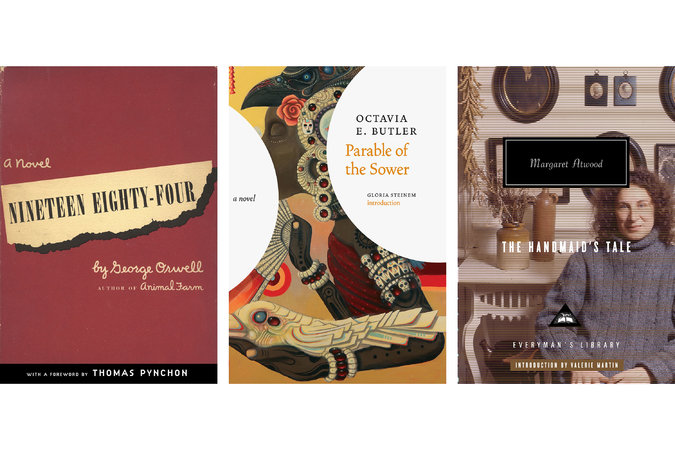
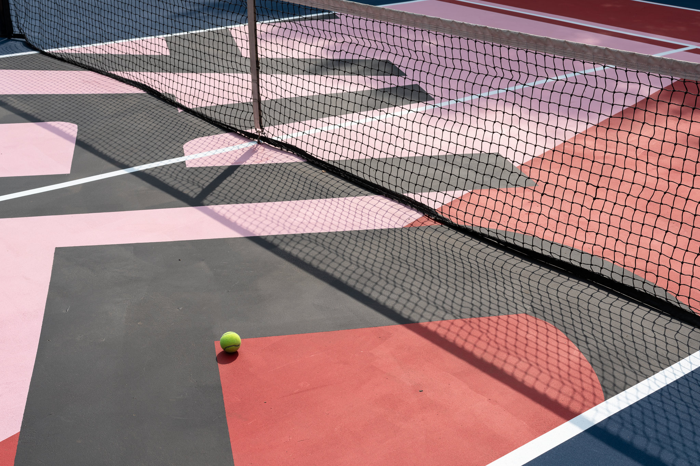

INICIO
Dimmsdale Times
NACIONALES
INTERNACIONALES
CULTURA
OPINIÓN
Cultura
________________________________________________________________________________________________
Modern Love
La época en la que vendí mis besos
Cuando era joven y pobre, vendí mis besos para pagar la renta. Dos años después de salir de la universidad, me mudé a Japón por la oferta de un puesto en una pequeña revista en inglés cerca de Tokio. No me importó que la editora de la revista me dijera que no podía pagarme. Me ofreció un lugar donde dormir y me dijo que podría conseguirme estudiantes que pagaran por aprender inglés. Lo mejor de todo fue cuando me dijo que tendría mucho tiempo para escribir. Compré un boleto y me fui.
Deportes
¿Quieres ser atleta olímpico? Inscríbete en este programa de TV
Ahora hay un concurso de telerrealidad para intentar competir a nivel olímpico... y ha rendido frutos.
Libros

Cuáles son los libros que los escritores recomendarían para el colegio
Los profesores recurren en general a obras típicas para sus listas de lecturas asignadas para las clases de bachillerato. Entonces les preguntamos a algunos escritores: ¿ustedes cuáles libros incluirían? Estas fueron sus respuestas.
Arte

El arte llega a las canchas de tenis
La asociación estadounidense de tenis invitó a diversos artistas a reimaginar la superficie de canchas alrededor del país y romper su monotonía como parte de las celebraciones del cincuenta aniversario del Abierto de Estados Unidos, uno de los cuatro Grand Slams.